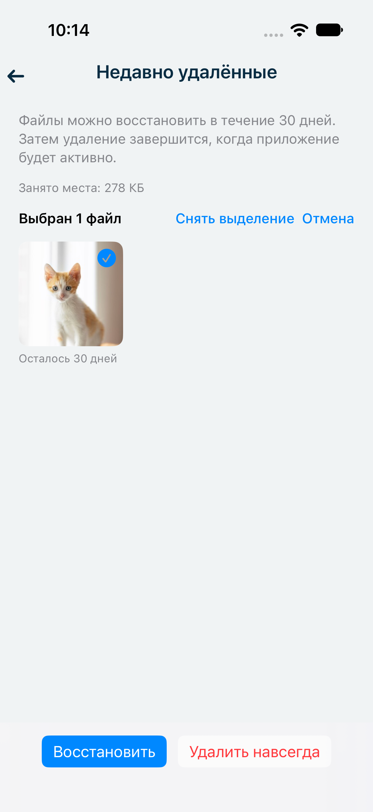
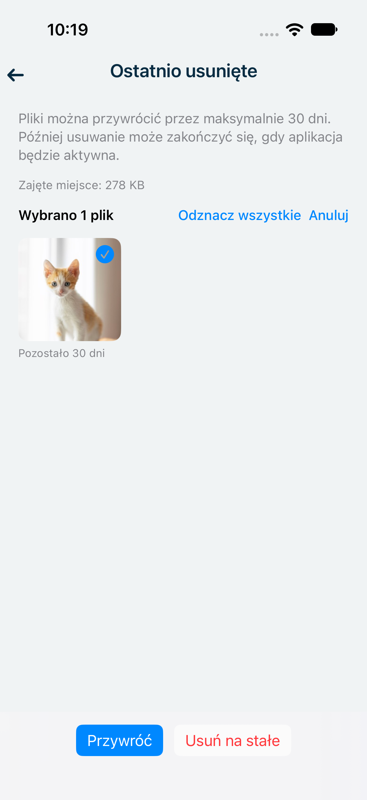

Recently Deleted
A second chance.
For up to 30 days.
Photos and videos deleted from your vault now go to Recently Deleted. Select what you want to keep and tap Restore.
Albums → Recently Deleted

Photos and videos deleted from your vault now go to Recently Deleted. Select what you want to keep and tap Restore.
Sort your albums by name or date, in either direction. Your choice stays saved the next time you open the app.

Recently Deleted keeps using device storage until items are permanently deleted. It cannot recover items deleted before this update or lost when you delete the app, and it is not a backup. Cleanup after 30 days may finish when the app is active. System collections keep their fixed order.
Фото и видео, удалённые из сейфа, теперь попадают в «Недавно удалённые». Выберите нужные файлы и нажмите «Восстановить».

Сортируйте альбомы по названию или дате в любом направлении. Выбранный порядок сохранится при следующем запуске приложения.

Файлы в «Недавно удалённых» занимают место на устройстве до окончательного удаления. Раздел не позволяет вернуть файлы, удалённые до этого обновления или потерянные при удалении приложения, и не заменяет резервную копию. По истечении 30 дней удаление может завершиться, когда приложение будет активно. Порядок системных разделов остаётся фиксированным.
Zdjęcia i filmy usunięte z sejfu trafiają teraz do sekcji Ostatnio usunięte. Zaznacz pliki, które chcesz zachować, i stuknij Przywróć.

Sortuj albumy według nazwy lub daty, rosnąco albo malejąco. Wybrana kolejność zostanie zachowana po ponownym otwarciu aplikacji.

Pliki w sekcji Ostatnio usunięte zajmują miejsce na urządzeniu do chwili trwałego usunięcia. Nie można odzyskać plików usuniętych przed tą aktualizacją ani utraconych po usunięciu aplikacji. Ta sekcja nie zastępuje kopii zapasowej. Po 30 dniach usuwanie może zakończyć się, gdy aplikacja będzie aktywna. Kolekcje systemowe zachowują stałą kolejność.